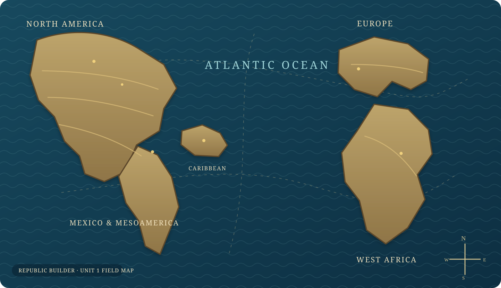

✦
Current dispatch
Begin Expedition
Select a map marker to open your first Unit 1 challenge and begin collecting Atlantic evidence.
Unit 1 · 1491-1607
Chart encounters across the Atlantic World. Each region marker opens a Unit 1 quest mode: HIPP Challenge, Evidence Royale, Vocabulary Bounty, and Boss Battle.
Navigate each Atlantic landmark to unlock evidence and complete writing drafts.
Loading announcements...
Quest markers are placed across the Caribbean, Mesoamerica, North America, the Atlantic Ocean, West Africa, England, and the Iberian Peninsula.

Current dispatch
Select a map marker to open your first Unit 1 challenge and begin collecting Atlantic evidence.
Unit 1 source intelligence
0 primary-source records are indexed here with tags, citations, and quest links.